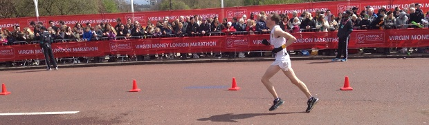

Eleven SAC runners completed the 2016 London Marathon in cool conditions, with David Ives setting a new M40 club second-best and James Mason (shown finishing in Dan Witt's photo below) a new senior third-best. However, Kim Pegg demonstrated the most even pacing.
The Sevenoaks AC results were:
| Place overall | Place gender | Place category | Name | Runner no | Category | HALF | FINISH |
|---|---|---|---|---|---|---|---|
| 2631 | 2486 | 343 | Ashlee, Andrew (GBR) | 29559 | 45-49 | 01:29:34 | 03:05:18 |
| 34798 | 22416 | 3130 | Carr, Robert (GBR) | 55275 | 45-49 | 02:44:35 | 05:40:48 |
| 30620 | 20458 | 81 | Fitzmaurice, James (IRL) | 21749 | 70+ | 02:17:49 | 05:08:43 |
| 23471 | 6759 | 3874 | Forcat, Silvia (ESP) | 20844 | 18-39 | 02:01:16 | 04:35:47 |
| 369 | 361 | 58 | Ives, David Andrew (GBR) | 653 | 40-44 | 01:17:35 | 02:41:37 |
| 218 | 216 | 173 | Mason, James (GBR) | 658 | 18-39 | 01:13:52 | 02:37:53 |
| 12848 | 2912 | 1657 | Pegg, Kimberley (GBR) | 47840 | 18-39 | 01:57:59 | 03:56:07 |
| 3143 | 2922 | 220 | Stevens, John (GBR) | 28665 | 50-54 | 01:32:05 | 03:09:39 |
| 4682 | 4190 | 919 | Thatcher, Marc John (GBR) | 4414 | 40-44 | 01:36:02 | 03:19:51 |
| 32261 | 21259 | 897 | Thomas, Richard Ley (GBR) | 34684 | 55-59 | 02:24:09 | 05:19:44 |
| 9742 | 1938 | 1124 | Wills, Katie (GBR) | 47838 | 18-39 | 01:48:18 | 03:44:57 |

The London Marathon results are here.
At the Brighton Marathon the previous week, Sally Shewell was fifth W55 with a new club best 3:53:12, Andrew Milne was 268th in 3:10:55, Keith Brown 306th in 3:12:20 and Jenny Austin 1919th in 4:42:27. The full results are here.